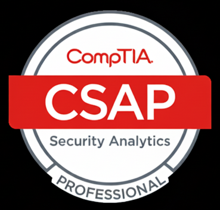
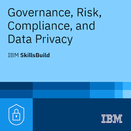
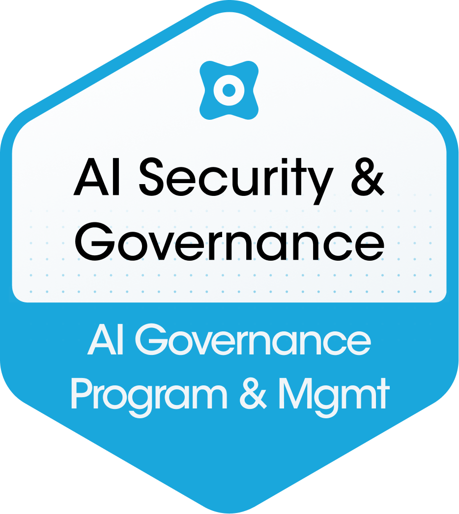
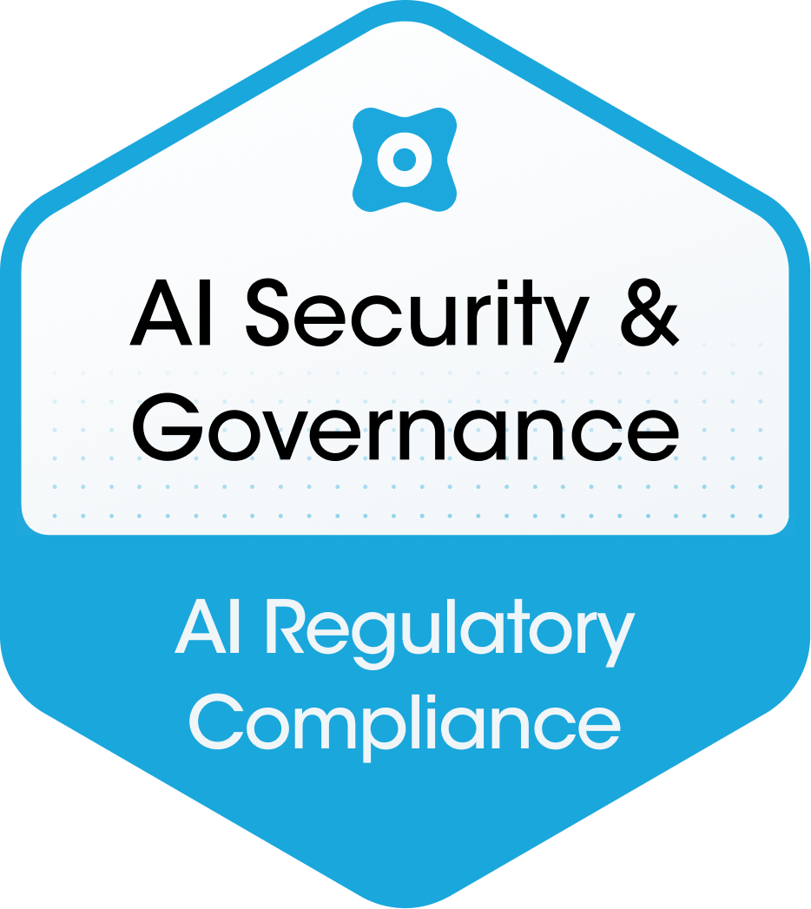
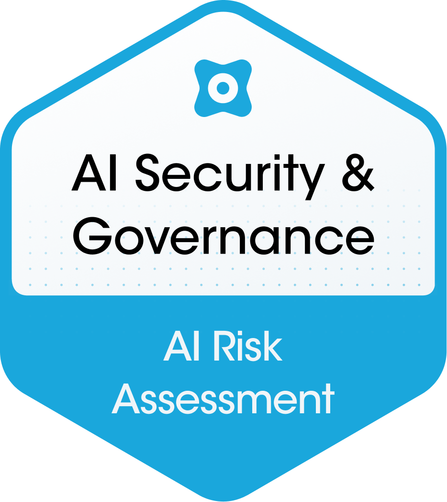

My Work
Cybersecurity Bootcamp Project
A full-scale Vulnerability Assessment, Penetration Testing (VAPT), and Forensic Investigation conducted during a 16-week Cybersecurity Bootcamp. The assessment uncovered 58 vulnerabilities (16 high-risk) and recovered 5 forensic artifacts from a simulated enterprise lab.
- Kali Linux
- Nmap
- Metasploit
- Hydra
- Greenbone (OpenVAS)
- DVWA
- Autopsy


Master Thesis
Digital Twin-based Intrusion Detection System (IDS),
Robert Bosch GmbH
Loction: Stuttgart,Germany
Designed and implemented a Digital Twin-based IDS during my Master’s thesis at Robert Bosch GmbH, enhancing real-time threat visibility and cyber resilience for Industry 4.0 environments using Docker and Python automation.
- Docker
- Python
- Shell Scripting
- Linux
- Network Monitoring
- Industrial IoT

Security & Privacy Specialist,
Continental Automotive Technologies GmbH
Loction: Regensburg,Germany
Performed Threat Analysis and Risk Assessment (TARA) aligned with ISO/SAE 21434 and UN ECE R155, designed secure architectures, and coordinated risk mitigation for embedded automotive platforms.
- ANSYS Medini Analyze
- ISO/SAE 21434 & UN ECE R155 Compliance
- Threat Modeling & Risk Mitigation
- Security Architecture Design
- Stakeholder Collaboration & Documentation
Bilingual Assistant Application Developer,
Fujitsu Consulting India
Loction: Pune,India
Built multi-channel UI features and mobile interfaces; translated Japanese technical documentation into performant, standards-compliant JavaScript and improved usability for enterprise clients.
- JavaScript / HTML / CSS
- UI & UX Optimization
- Japanese ↔ English Technical Translation
- Agile Development & Collaboration
- Performance Tuning & Testing

Trainee,
NTT DATA
Loction: Pune,India
Completed professional Java development training focused on object-oriented programming and application design fundamentals, plus Japanese language training (JLPT N4) for cross-border collaboration.
- Java & Object-Oriented Programming
- Software Design Fundamentals
- Project Lifecycle Understanding
- Japanese Language (JLPT N4)
- Cross-Cultural Team Communication
Certifications



Governance & AI Security




Focused on AI governance, regulatory compliance, and enterprise AI risk management.
Skills
Technical Skills
Cybersecurity professional with hands on experience in Security Operations, Incident Response, Threat Detection, Vulnerability Management, Digital Forensics, Cloud Security, OT Security, Security Architecture, and Governance Risk & Compliance. Experienced in conducting security assessments, automating security workflows, performing threat investigations, and supporting enterprise security initiatives across operational technology and cloud environments.
- Cybersecurity Domains: Security Operations · Incident Response · Threat Detection · Vulnerability Management · Digital Forensics · OT Security · Cloud Security · Security Architecture · Governance Risk & Compliance · Threat Modeling
- Security Operations & Incident Response: Security Monitoring · Alert Analysis · Incident Response Lifecycle (Detection · Analysis · Containment · Eradication · Recovery) · Incident Triage · Zero Day Vulnerability Response · Log4Shell Analysis · Business Impact Assessment · Ransomware Recovery · Incident Documentation · Root Cause Analysis
- Threat Detection & Security Monitoring: Threat Detection Engineering · SIEM Investigation · Security Analytics · Splunk Enterprise · Security Event Correlation · Authentication Monitoring · Linux Log Analysis · Detection Automation · MITRE ATT&CK Mapping · Security Monitoring Dashboards · Anomaly Detection · Digital Twin Based Intrusion Detection
- Vulnerability Management & Offensive Security: Vulnerability Assessment · Penetration Testing · Vulnerability Validation · CVSS Risk Scoring · Attack Surface Analysis · Security Remediation Planning · SQL Injection Testing · Cross Site Scripting Assessment · Network Reconnaissance · Service Enumeration · Risk Based Vulnerability Prioritization
- Digital Forensics & Investigations: Evidence Acquisition · Evidence Preservation · Chain of Custody · Timeline Reconstruction · Incident Investigation · Digital Forensic Analysis · Security Event Investigation · Forensic Reporting
- Cloud Security & Infrastructure Security: Microsoft Azure Security · Azure Virtual Machines · Azure Network Security Groups · Azure Monitor · Cloud Risk Assessment · Linux Security · Security Hardening · Container Security · Docker · Network Security · TCP/IP · Firewalls · IDS/IPS · VPN Technologies
- Security Architecture & Governance: Zero Trust Architecture · Enterprise Security Architecture · Identity and Access Management · Security Control Design · Security Strategy · Risk Assessment · Security Governance · Security Controls Assessment · Data Protection · Operational Technology Security
- Security Frameworks & Standards: NIST Cybersecurity Framework · ISO/IEC 27001 · MITRE ATT&CK · OWASP Top 10 · ISO/SAE 21434 · UNECE R155 · STRIDE · Threat Modeling · Vulnerability Management Lifecycle · Governance Risk & Compliance
- Automation, Monitoring & Visualization: Python · PowerShell · Bash/Shell · Security Automation · Detection Automation · Log Parsing · Incident Response Automation · Prometheus · Grafana · Monitoring and Alerting · Security Reporting
- Security Tools & Platforms: Splunk Enterprise · Nmap · Wireshark · Tcpdump · OWASP ZAP · Nessus · Greenbone OpenVAS · Metasploit · Hydra · Autopsy · Docker · Kali Linux · Git · Jira
- Professional Skills: Technical Documentation · Security Assessment Reporting · Stakeholder Communication · Risk Communication · Security Awareness Support · Cross Functional Collaboration · Security Recommendations and Remediation Planning
Languages
- English: Fluent
- German: B1 Level (Currently Improving Professional Proficiency)
- Japanese: JLPT N3 (Intermediate Professional Working Proficiency)
- Hindi: Native / Fluent
- Marathi: Native / Fluent
Featured Cybersecurity Projects
Bosch Master Thesis
Digital Twin Based Intrusion Detection System for Industry 4.0 Connected Sensors
Cybersecurity Research | OT Security | Threat Detection | Digital Twin Technology
Designed and developed a Digital Twin based Intrusion Detection System to enhance cyber threat detection within Industry 4.0 connected sensor environments. The solution established a trusted digital baseline of normal system behavior and continuously compared operational activity against expected process states to identify anomalies and malicious actions.
Key Contributions
- Designed and implemented a Digital Twin architecture for industrial sensor environments
- Developed containerized detection pipelines using Docker to support scalable deployment
- Simulated adversarial activity and abnormal system behavior to validate detection capabilities
- Implemented process and network level monitoring to identify deviations from expected operational patterns
- Integrated monitoring and visualization capabilities using Prometheus and Grafana
- Improved anomaly detection effectiveness by approximately twenty five percent through behavior based analysis
Technologies
Docker, Python, Linux, Prometheus, Grafana, Network Monitoring, Threat Detection, OT Security
Outcome
Successfully demonstrated how Digital Twin technology can strengthen industrial cybersecurity monitoring by identifying anomalous behavior and potential attack activity before operational impact occurs.
Zero Day Incident Response and Ransomware Recovery
Security Operations | Vulnerability Management | Incident Response
Performed end to end incident response activities for critical security vulnerabilities and ransomware recovery scenarios through a business risk driven approach. Focused on vulnerability triage, remediation prioritization, stakeholder communication, and recovery planning.
Key Contributions
- Assessed critical zero day vulnerabilities including Log4Shell to determine exploitation risk and remediation urgency
- Conducted infrastructure impact analysis to identify affected assets and responsible system owners
- Developed targeted remediation guidance for technical and non technical stakeholders
- Prioritized response actions based on business impact and operational risk
- Automated recovery activities through Python based scripting within controlled ransomware recovery scenarios
- Documented incident response workflows and recovery procedures aligned with enterprise security practices
Technologies
Python, Log4Shell Analysis, Incident Response, Vulnerability Management, Risk Assessment, Security Operations
Outcome
Demonstrated the ability to translate vulnerability intelligence into actionable remediation plans while supporting business continuity and cyber resilience objectives.
Vulnerability Assessment Penetration Testing and Digital Forensics
Offensive Security | Digital Forensics | Security Validation
Conducted comprehensive vulnerability assessment, penetration testing, and forensic investigations to identify security weaknesses, validate exploitability, and support incident investigation activities.
Key Contributions
- Identified and assessed fifty eight security vulnerabilities across laboratory environments
- Categorized findings according to risk severity and business impact
- Validated attack scenarios involving SQL Injection, Cross Site Scripting, weak authentication controls, and SMB misconfigurations
- Performed forensic evidence acquisition, validation, and timeline reconstruction activities
- Maintained chain of custody principles throughout forensic investigations
- Produced professional remediation reports with prioritized security recommendations
Technologies
Nessus, OpenVAS, Nmap, Metasploit, Hydra, Autopsy, Digital Forensics, Penetration Testing
Outcome
Provided actionable security insights that enabled effective remediation planning while demonstrating offensive and defensive security assessment capabilities.
Cybersecurity Governance Risk and Compliance Audit
Governance | Risk Management | Security Controls Assessment
Performed cybersecurity governance and control assessments to evaluate organizational security maturity and compliance against internationally recognized security frameworks.
Key Contributions
- Conducted structured cybersecurity process and control assessments
- Evaluated security controls against ISO IEC 27001 and NIST Cybersecurity Framework requirements
- Identified governance gaps and remediation opportunities across key security domains
- Assessed risk management processes and control effectiveness
- Developed audit ready documentation and executive level findings reports
- Supported continuous improvement initiatives through risk based recommendations
Technologies
ISO IEC 27001, NIST CSF, Risk Assessment, Security Controls, Governance, Compliance
Outcome
Delivered comprehensive control assessments that improved visibility into security gaps and supported compliance readiness efforts.
Zero Trust Security Architecture Case Study
Enterprise Security Architecture | Identity Security | Strategic Cybersecurity Planning
Designed an enterprise scale Zero Trust security architecture for a hybrid environment spanning cloud platforms, on premises infrastructure, remote users, software as a service applications, and operational technology environments.
Key Contributions
- Developed a strategic Zero Trust architecture focused on identity centric security principles
- Defined access control, segmentation, and continuous verification mechanisms
- Integrated cloud security, endpoint security, and operational technology considerations
- Designed centralized visibility, detection, and response capabilities
- Established a phased implementation roadmap aligned with business priorities
- Incorporated data protection and least privilege principles across enterprise environments
Technologies
Zero Trust, Identity and Access Management, Cloud Security, OT Security, Security Architecture
Outcome
Produced a scalable security architecture framework designed to reduce attack surface, strengthen visibility, and improve enterprise cyber resilience.
Microsoft Azure Cloud Security Risk Assessment
Cloud Security | Risk Assessment | Security Controls Review
Performed a security assessment of Microsoft Azure infrastructure to identify cloud security risks and evaluate the effectiveness of deployed security controls.
Key Contributions
- Assessed Azure virtual machines, network security groups, and remote access configurations
- Evaluated monitoring, logging, and alerting capabilities within the Azure environment
- Reviewed cloud security posture against NIST Cybersecurity Framework, CIS Controls, and ISO IEC 27001
- Identified security misconfigurations and potential attack vectors
- Recommended risk based remediation measures to strengthen cloud security
- Documented assessment findings and control improvement opportunities
Technologies
Microsoft Azure, Azure Monitor, Azure NSG, Windows Server, Cloud Security
Outcome
Provided practical recommendations to improve cloud security posture, visibility, and regulatory alignment.
OWASP ZAP Web Application Vulnerability Assessment
Application Security | Vulnerability Assessment | Secure Development
Performed security testing of web applications using industry standard assessment methodologies to identify exploitable vulnerabilities and security weaknesses.
Key Contributions
- Conducted manual and automated web application security assessments
- Identified SQL Injection and Cross Site Scripting vulnerabilities
- Evaluated authentication, session management, and input validation controls
- Performed active scanning and vulnerability verification activities
- Assessed security findings based on likelihood and business impact
- Developed remediation recommendations to reduce application security risks
Technologies
OWASP ZAP, SQL Injection Testing, Cross Site Scripting Analysis, Application Security
Outcome
Enhanced understanding of application security risks and demonstrated the ability to identify and prioritize vulnerabilities affecting web applications.
Linux Log Analysis Detection Automation and Splunk SIEM Investigation
Threat Detection | Security Monitoring | SIEM Operations
Performed security monitoring and investigation activities through Linux log analysis, threat detection automation, and SIEM based event correlation.
Key Contributions
- Investigated Linux authentication logs to identify brute force attacks and unauthorized access attempts
- Analyzed failed logins, invalid user activity, and suspicious authentication patterns
- Developed Python based automation to improve detection efficiency
- Leveraged Splunk Enterprise for event correlation and security monitoring
- Created dashboards and visualizations to support security investigations
- Mapped observed attack activity to MITRE ATT&CK techniques
Technologies
Splunk Enterprise, Python, Linux Logs, SIEM, Threat Detection, MITRE ATT&CK
Outcome
Improved visibility into authentication related threats and demonstrated practical SOC analysis and detection engineering capabilities.
Network Scanning and Host Enumeration with Nmap
Network Security Assessment | Reconnaissance | Vulnerability Identification
Conducted network reconnaissance and security assessments to identify exposed services, potential attack paths, and vulnerabilities across networked systems.
Key Contributions
- Performed host discovery, service enumeration, and operating system fingerprinting
- Conducted TCP and UDP based network analysis
- Utilized Nmap Scripting Engine to automate vulnerability identification activities
- Validated potential vulnerability findings through manual verification
- Investigated exposure associated with Slowloris related findings and assessed exploitation risk
- Developed risk based remediation recommendations to reduce attack surface
Technologies
Nmap, NSE Scripts, Service Enumeration, Vulnerability Assessment, Network Security
Outcome
Improved understanding of network attack surfaces and demonstrated practical skills in reconnaissance, enumeration, and vulnerability validation.
About Me

I am a Cybersecurity Professional with over 3+ years of experience assessing cyber risk across automotive and IT environments and translating security findings into actionable risk insights. My work centers on understanding attack surfaces, evaluating control effectiveness, and driving risk informed mitigation planning.
I have conducted structured threat analysis and cyber risk assessments across complex systems, working with engineering teams and suppliers to define mitigation priorities, inform risk acceptance decisions, and strengthen security alignment throughout the system lifecycle. With a background in software development and hands on experience in security monitoring and incident analysis, I bring technical depth grounded in how systems are designed and operated. I also bring international professional experience across Germany, Japan, and India, along with CompTIA CySA+, Security+ certifications, and am open to connecting with professionals working in cybersecurity.
View Academic RecordsGet in Touch
I am always open to connecting with professionals to discuss potential opportunities, exchange ideas, or explore areas of collaboration. If you would like to get in touch, please reach out through my LinkedIn profile using the link below.
Visit my LinkedIn